تحديد فترة الحجز المسموحة
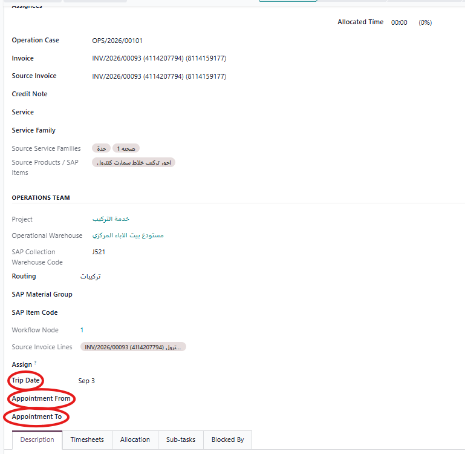
يتم تحديد موعد التركيب من قبل المشرف، وتحديد الفترة المسموح للعميل بالحجز ضمنها.
تبدأ دورة العمل بوصول الفاتورة التي تحتوي على خدمة التوصيل والتركيب من SAP إلى نظام خدمات مابعد البيع، حيث تظهر في مرحلة "طلب تركيب" لبدء تنفيذ الخدمة.
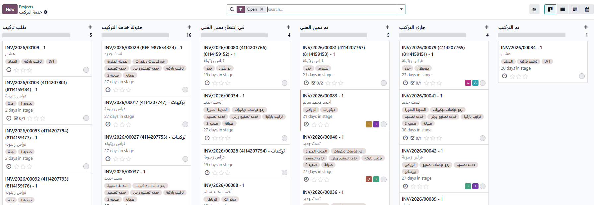

يتم تحديد موعد التركيب من قبل المشرف، وتحديد الفترة المسموح للعميل بالحجز ضمنها.
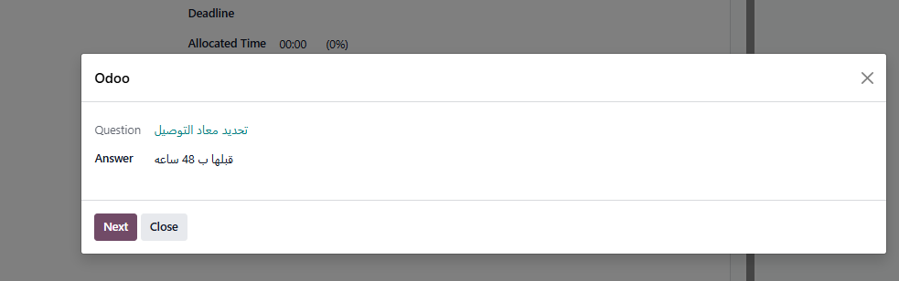
يتم تجهيز سؤال لمعرفة موعد التوصيل قبل التركيب بكم ساعة.
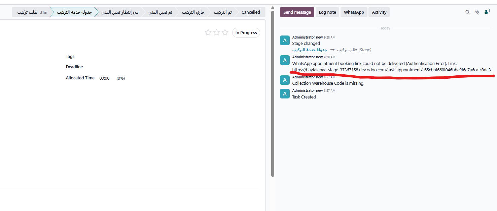
يظهر رابط حجز موعد التركيب داخل مهمة التركيب، ويمكن إرسال الرابط إلى العميل ليقوم بالحجز، أو يمكن لخدمة العملاء فتح الرابط واستكمال عملية الحجز نيابةً عن العميل.
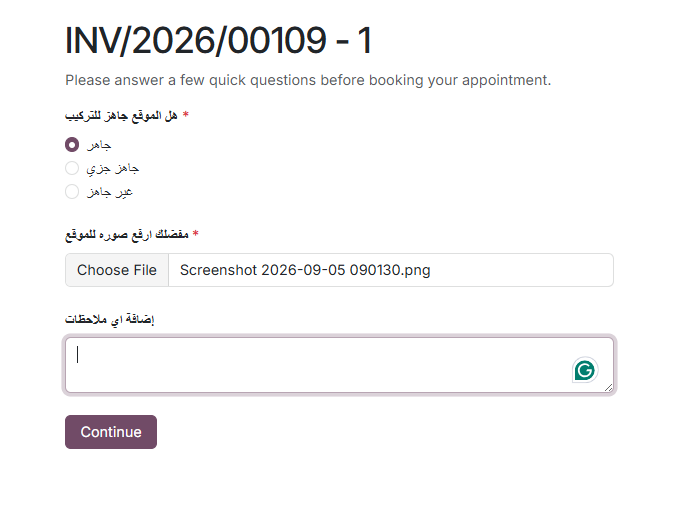
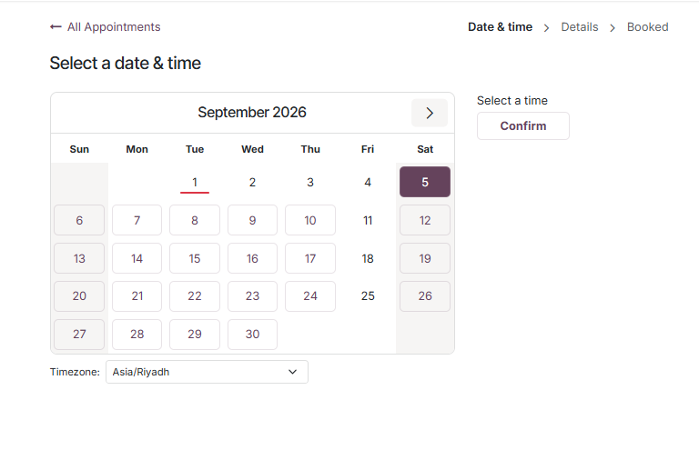
يختار العميل التاريخ والوقت المناسبين لموعد التركيب ضمن الفترة المسموح بالحجز فيها والتي تم تحديدها مسبقًا من قبل المشرف.
تُحدَّد المواعيد المتاحة بناءً على نافذة الحجز المحددة مسبقًا: Appointment From → Appointment To
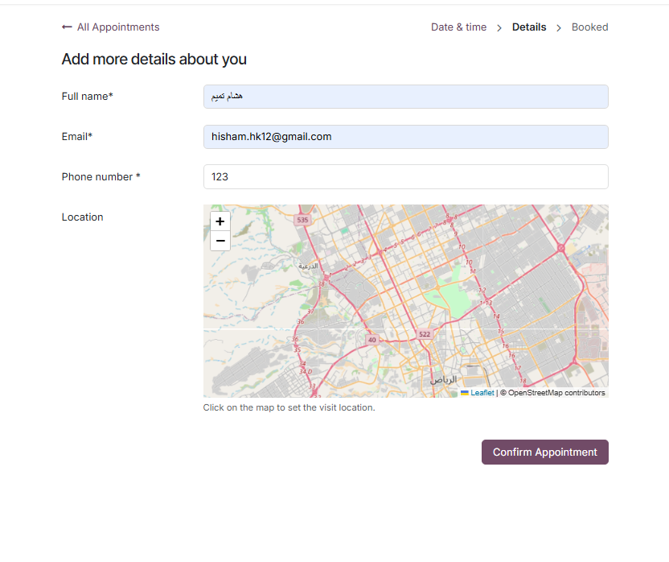
بعد اختيار الموعد، يقوم العميل بمراجعة بياناته وتحديد موقع تنفيذ خدمة التركيب على الخريطة، ثم يؤكد بيانات الموعد.
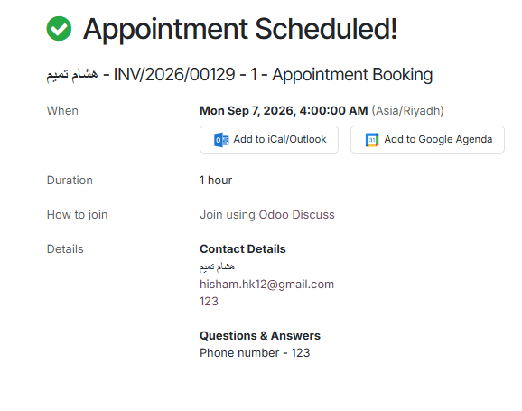
بعد تأكيد البيانات والموعد، يتم تثبيت حجز موعد التركيب وتظهر شاشة تأكيد الموعد للعميل.
بعد حجز موعد التركيب تنتقل المهمة إلى مرحلة "في انتظار تعيين الفني"، وتبقى في هذه المرحلة حتى يتم تحديد الفني المسؤول عن تنفيذ خدمة التركيب.
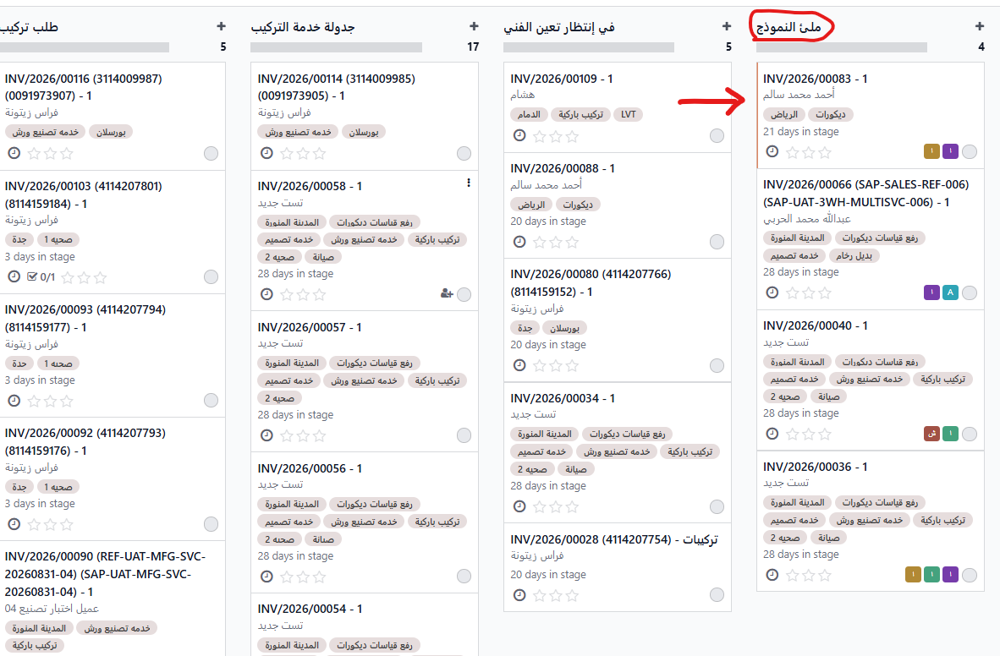
يتم اختيار الفني المسؤول عن تنفيذ الخدمة من حقل Assign، وبعد تعيين الفني تنتقل المهمة إلى مرحلة "تم تعيين الفني".
سيتم استكمال بقية دورة العمل لاحقًا.
تبدأ دورة العمل بوصول الفاتورة التي تحتوي على خدمة التوصيل من SAP إلى نظام خدمات مابعد البيع، حيث تظهر في مرحلة "طلب توصيل" لبدء تنفيذ الخدمة.
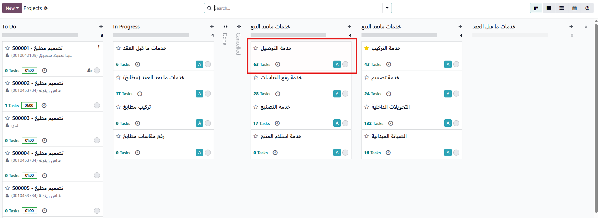

تظهر الفاتورة في مرحلة طلب التوصيل، ويتم نقلها بشكل يدوي إلى مرحلة جدولة التوصيل، إما عن طريق تغيير المرحلة مباشرة أو باستخدام السحب والإفلات (Drag & Drop).

يتم نقل المهمة من مرحلة طلب توصيل إلى مرحلة جدولة التوصيل، إما عن طريق السحب والإفلات أو بشكل تلقائي من النظام. بعد انتقال المهمة، يتم إرسال رسالة إلى العميل تحتوي على رابط لتحديد موعد التوصيل والتسليم.

في هذه المرحلة يظهر رابط حجز الموعد ليتم إرساله إلى العميل. يفتح العميل الرابط، ويحدد موقع التنفيذ والموعد المناسب.
بعد وصول الرابط للعميل (خدمة العملاء)، يقوم العميل بالخطوات التالية:

يختار العميل موعد التوصيل بناءً على الطاقة الاستيعابية المحددة مسبقًا لكل صالة.

يراجع العميل بياناته ويحدد موقع تسليم البضاعة قبل تأكيد الموعد.

بعد تأكيد البيانات والموعد، يتم تثبيت الحجز وتظهر للعميل رسالة تأكيد الموعد.
بعد الانتهاء من جدولة موعد التوصيل، ننتقل إلى ربط الخدمة بالسائق. في هذه المرحلة يتم تعيين السائق المرتبط بهذه الخدمة.

بعد تحديد السائق، تنتقل المهمة بشكل تلقائي إلى مرحلة ملئ النموذج (سند التحميل)، حيث يقوم الموظف المعني بملئ كافة بيانات أمر التحميل.


بعد الانتهاء من ملئ بيانات سند التحميل وحفظها، تنتقل المهمة إلى مرحلة جاري التوصيل، ويتم إرسال رسالة واتساب إلى السائق لبدء الرحلة.
بدء المهمة ← توثيق التوصيل ← إنهاء المهمة

يبدأ السائق تنفيذ مهمة التوصيل من خلال بوابة السائق بالضغط على Start لبدء الرحلة.

بعد الانتهاء من عملية التوصيل، يقوم السائق برفع صورة لتوثيق إتمام التوصيل.

بعد الانتهاء من تنفيذ التوصيل يختار السائق End Task.
تأكيد العميل ← اكتمال التوصيل

بعد إنهاء المهمة يتم إرسال رمز OTP إلى العميل للتأكد من استلام الخدمة.

بعد إدخال رمز OTP بنجاح تصبح المهمة Completed ويتم تأكيد اكتمال خدمة التوصيل.
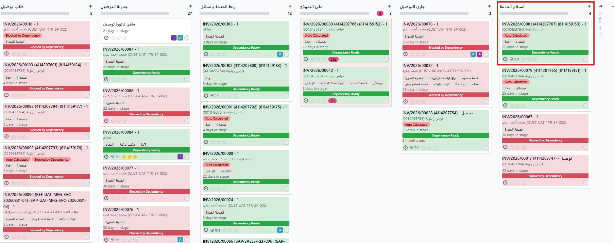